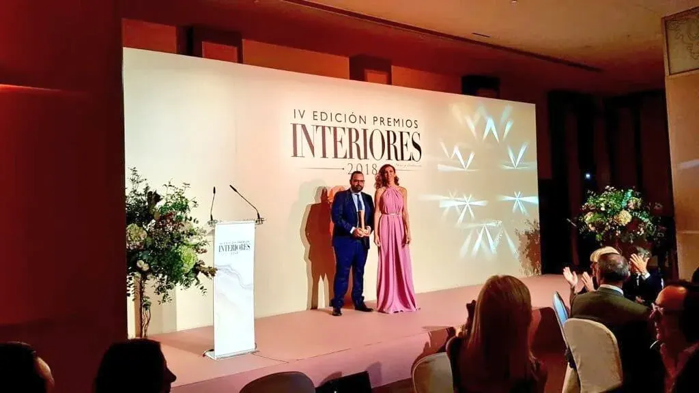
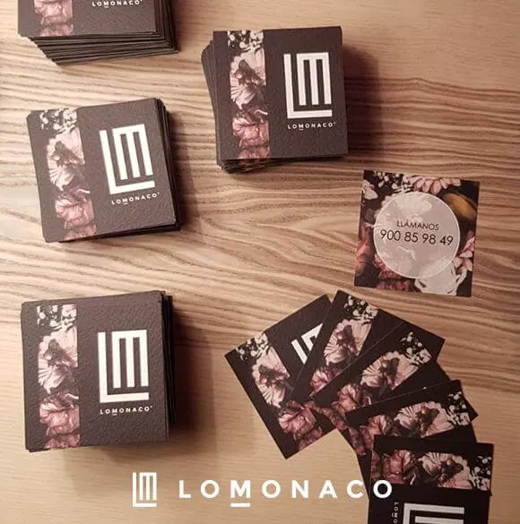
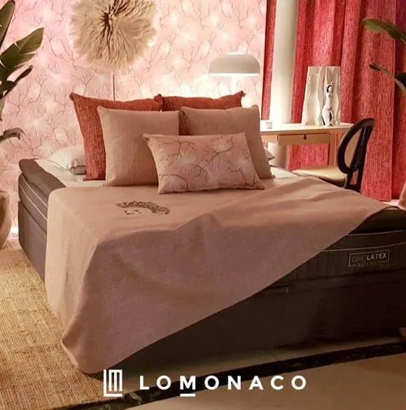
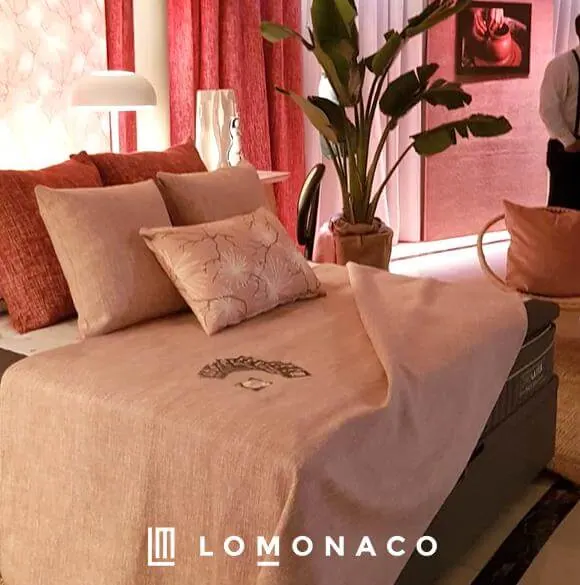
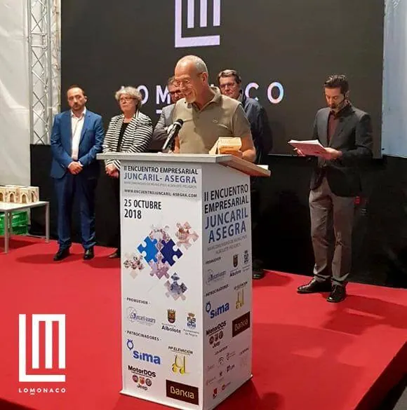

El Colchón Criolátex Natura, premiado como el Mejor Sistema de Descanso de 2018

El jurado compuesto por un heterogéneo equipo de profesionales de sectores diferentes (aunque interrelacionados) como son el interiorismo, la arquitectura, la moda, el periodismo y las artes, tuvo a bien conceder al nuestro colchón de Criolátex Natura el Mejor Sistema de Descanso de 2018.
Hecho a mano, hecho con el corazón
La Revista Interiores quiso para esta IV Edición de los Premios Interiores, galardonar a un buen número de artistas y artesanos que ponen todo el ahínco en dotar a sus creaciones de la pasión que solo lleva lo “hecho a mano”. Lo Monaco que hace colchones con cabeza, corazón y sueños, pero también bajo el paraguas de la innovación y el diseño, tuvo un lugar especial en tan prestigioso evento.

La glamurosa entrega de premios contó con la presencia de numerosas “celebrities”, además de estar guiado por una conductora de excepción, Raquel Sánchez-Silva. Para Lo Monaco, la gala culminaba con la entrega a Antonio Toledo, Director Comercial y Marketing de la compañía, del reconocimiento al colchón Criolátex Natura como el Mejor Sistema de Descanso de 2018, en palabras de Toledo tras recoger el premio de manos de la modelo Paloma Lago: “Para conseguir un sueño, hay que destacar bien”. Además quiso dedicar el premio a todo el equipo humano que pone su grano de arena en Grupo Lo Monaco, para hacer posible que el colchón Criolatex sea un producto de excepción.

La estilista de decoración, Paloma Pacheco Turnes planteó para esta ocasión un espacio de excepción, un diseño de un dormitorio que giraba en torno a una cama Lo Monaco donde el protagonista era el color, una estancia repleta de calidez, estilo y armonía.

Premio a la Responsabilidad Social Corporativa
El mes de octubre ha venido cargado de premios para Grupo Lo Monaco. Así, en el marco del II Encuentro Empresarial Juncaril-Asegra, se ha concedido a la compañía el premio a la Responsabilidad Social Corporativa. Livio Lo Monaco, Presidente y Consejero Delegado, que fue el encargado de recoger el premio, destacó en el momento de la entrega del galardón, que hay que “devolver todo lo que recibimos”. Además recordó que la empresa siempre ha estado preocupada por la responsabilidad social y que se hace un esfuerzo cada vez para aportar un poco más.
